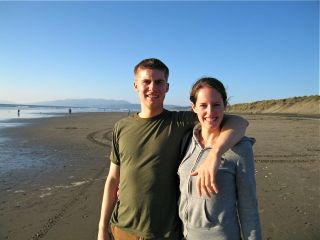

About
- Programming: Code in Ruby/Rails and Python. Member of Bloc's summer 2012 cohort and Dev Bootcamp's fall 2012 cohort.
- Work: Employed by KPMG's Economic and Valuation Services department from June 2007 to present. Specialize in transfer pricing and valuation (especially intellectual property valuation). Spent 3 years in Mountain View, 1 year in San Francisco, and 1 year in NYC and was recently promoted to Manager.
- Chartered Financial Analyst: Earned CFA Charter in 2011 after passing all three exams on first attempt (CFA exams cover finance, accounting, ethics, derivates, fixed income, equities, portfolio theory, etc.).
- Education: Graduated from Santa Clara University in 2007 with Economics major and Math minor.
- Interests: Programming (especially recursion), surfing, carveboarding, indo boarding, golf, eating, peak oil (peak everything), and automation.
